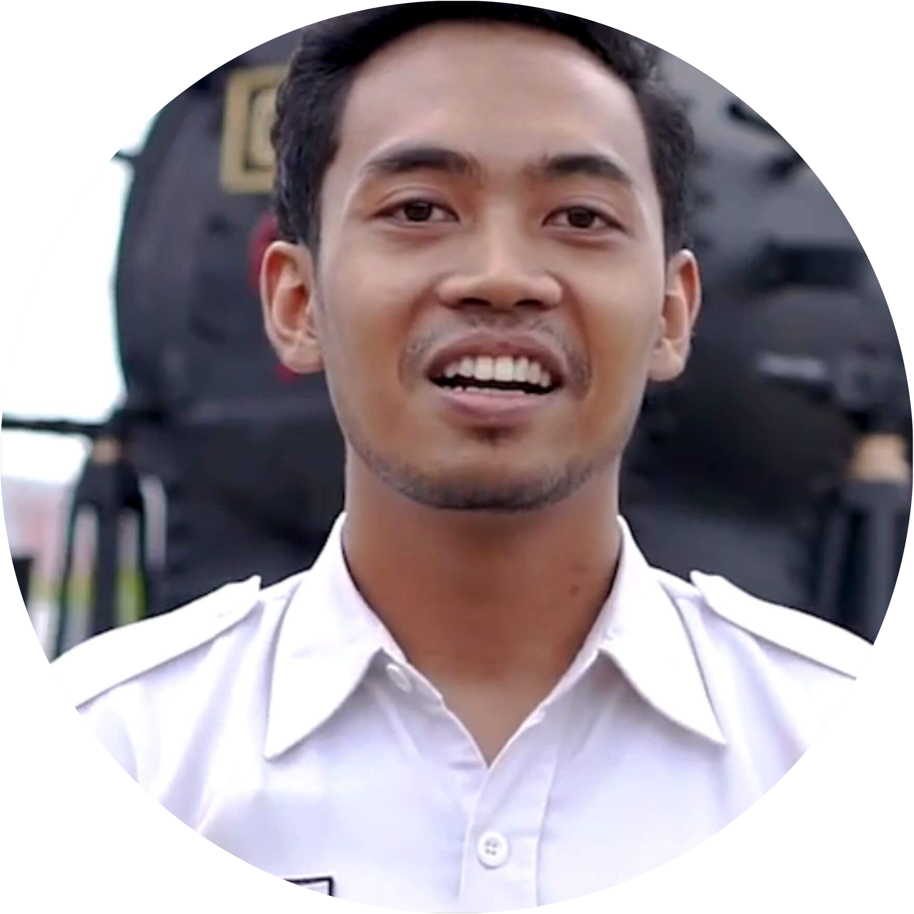
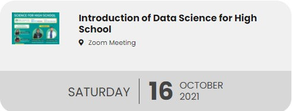
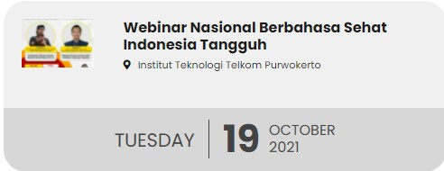
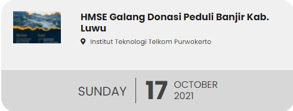
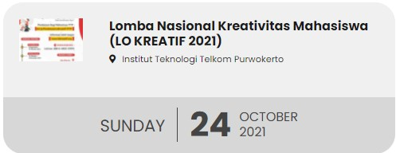

|
|
Tentang ITTP |
Pendidikan |
Prestasi |
Riset dan Teknologi |
Pendaftaran |
|
|
|
|
|
 Prestasi ITTP
Prestasi ITTP Lebih Dekat Purwokerto
Lebih Dekat Purwokerto Fasilitas dan Kegiatan Kampus
Fasilitas dan Kegiatan Kampus Virtual Tour Campus
Virtual Tour CampusKenapa harus Institut Teknologi Telkom Purwokerto
|
Kampus Cepat KerjaTerbukti rata-rata 83% lulusan bekerja sebelum wisuda |
Terakreditasi BAN PTInstitut sudah terakreditasi “Baik Sekali” |
Go InternasionalMemiliki 25 kerjasama internasional |
Kampus NasionalMahasiswa berasal dari 31 provinsi di Indonesia |


Testimoni & Opini
Kata Alumni
|
Arie Budi Prasojo
|
Hidni Qafiah
|
 Bayu Rian Agung N
|

Pojok Opini
|
|
 Tidak terasa sudah dua tahun berlalu negara kita menghadapi pandemi virus covid-19. Korban jiwa dan kerugian materil di semua sektor pemerintahan hampir semuanya terdampak pandemi covid-19. Rasa kebingungan dan was-was akan terjadinya gelombang kedua nampak terlihat di wajah para pemimpin kita, tak terkecuali Bapak Presiden Jokowi Dodo dan Menteri Pariwisata Ekonomi Kreatif Sandiaga Uno. Ya,
Tidak terasa sudah dua tahun berlalu negara kita menghadapi pandemi virus covid-19. Korban jiwa dan kerugian materil di semua sektor pemerintahan hampir semuanya terdampak pandemi covid-19. Rasa kebingungan dan was-was akan terjadinya gelombang kedua nampak terlihat di wajah para pemimpin kita, tak terkecuali Bapak Presiden Jokowi Dodo dan Menteri Pariwisata Ekonomi Kreatif Sandiaga Uno. Ya, BERITA & ACARA
Berita ITTP

Pendidikan Telkom Gelar Vaksinasi Massal untuk Civitas Kawasan Pendidikan Telkom dan Warga Purwokerto |

Sosialisasi dan Workshop Aplikasi Inovasi Desa Melung Pengmas dalam rangka Sosialisasi dan Workshop Aplikasi Inovasi Desa Melung telah dilaksanakan oleh empat... 
Dosen ITTP Selenggarakan Pengmas untuk Guru SD Telah terlaksana kegiatan pengabdian masyarakat oleh dua dosen ITTP, Gita Fadila Fitriana, S.Kom., M.Kom... |
Acara ITTP
|

 |

 |
TV ITTP
KERJASAMA INSTITUSI DAN KORPORASI
|
|
|